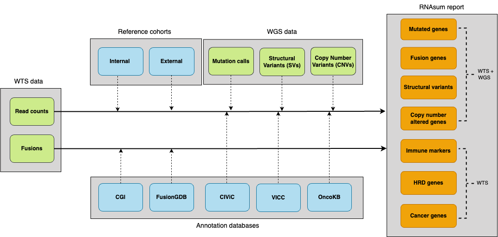

Transforms RNA-sequencing data into actionable clinical insights with automated reports.


Documentation | umccr.github.io/RNAsum
What is RNAsum?
RNAsum is an R package that integrates whole-genome sequencing (WGS) and whole-transcriptome sequencing (WTS) data to generate comprehensive, interactive HTML reports for cancer patient samples.
Quick start
RNAsum can be installed using one of the following two methods.
Installation
Option 1: from GitHub
RNAsum depends on pdftools, which requires system-level libraries (poppler, cairo, etc.) to be installed before installing the R package.
System dependencies installation
Ubuntu/Debian:
sudo apt-get install libpoppler-cpp-dev libharfbuzz-dev libfribidi-dev \
libfreetype6-dev libcairo2-dev libpango1.0-devmacOS:
brew install popplerHPC/Cluster (without root):
If you do not have root access (e.g., on a cluster), creating a fresh Conda environment is the most reliable way to provide necessary system libraries:
conda create -n rnasum_env -c conda-forge -c bioconda \
r-base=4.1 poppler harfbuzz fribidi freetype pkg-config \
cairo openssl pango make gxx_linux-64
conda activate rnasum_envOnce system dependencies are met, you can install the package directly from GitHub from within R console.
# 1. Increase timeout to prevent download failure for RNAsum.data
options(timeout = 600)
# 2. Install via remotes
if (!require("remotes")) install.packages("remotes")
remotes::install_github("umccr/RNAsum")Workflow
The pipeline consists of five main components.

rnasum_workflow
- WTS data collection: ingests per-gene read counts and gene fusions.
- Reference integration: normalises against reference cohorts.
- WGS data integration: links genomic alterations with expression data.
- Knowledge enrichment: annotates with clinically relevant databases.
- Report generation: prioritises findings and creates interactive visualizations.
Usage
Add RNAsum to PATH environment variable.
rnasum_cli=$(Rscript -e 'cat(system.file("cli", package="RNAsum"))')
ln -sf "$rnasum_cli/rnasum.R" "$rnasum_cli/rnasum"
export PATH="$rnasum_cli:$PATH"rnasum --versionCommon options
| Option | Description | Default |
|---|---|---|
--sample_name |
Sample identifier | Required |
--dataset |
TCGA reference cohort | PANCAN |
--salmon |
Salmon quantification file | - |
--kallisto |
Kallisto abundance file | - |
--arriba_tsv |
Arriba fusion detection output | - |
--pcgr_tiers_tsv |
PCGR variant calls (tier 1-4) | - |
--cn_gene_tsv |
Copy number by gene | - |
--filter |
Filter low-expressed genes | TRUE |
Run rnasum --help to get complete list of options.
For format and minimal content of input files (e.g. --pcgr_tiers_tsv, --cn_gene_tsv, --sv_tsv), see Input file formats.
Note: human reference genome GRCh38 (Ensembl based annotation version 105) is used for gene annotation by default. GRCh37 is no longer supported.
Examples
Test data: in /inst/rawdata/test_data folder of the GitHub repo
Runtime: < 15 minutes (16GB RAM, 1 CPU)
Scenario 1: WGS + WTS (recommended)
Comprehensive reporting, in which WGS-based findings are used as a primary source for expression profile prioritisation.
cd $rnasum_cli
rnasum \
--sample_name test_sample_WTS \
--dataset TEST \
--salmon "$PWD/../rawdata/test_data/dragen/TEST.quant.genes.sf" \
--arriba_pdf "$PWD/../rawdata/test_data/dragen/arriba/fusions.pdf" \
--arriba_tsv "$PWD/../rawdata/test_data/dragen/arriba/fusions.tsv" \
--dragen_fusions "$PWD/../rawdata/test_data/dragen/test_sample_WTS.fusion_candidates.final" \
--pcgr_tiers_tsv "$PWD/../rawdata/test_data/small_variants/TEST-snvs_indels.tiers.tsv" \
--cn_gene_tsv "$PWD/../rawdata/test_data/copy_number/TEST.cnv.gene.tsv" \
--sv_tsv "$PWD/../rawdata/test_data/structural/TEST-sv.tsv" \
--report_dir "$PWD/../rawdata/test_data/RNAsum" \
--save_tables FALSE \
--filter TRUEThe HTML report test_sample_WTS.RNAsum.html will be created in the inst/rawdata/test_data/dragen/RNAsum folder.
Scenario 2: WTS only
Basic reporting including information about detected gene fusions and expression levels of key genes.
cd $rnasum_cli
rnasum \
--sample_name test_sample_WTS \
--dataset TEST \
--salmon "$PWD/../rawdata/test_data/dragen/TEST.quant.genes.sf" \
--arriba_pdf "$PWD/../rawdata/test_data/dragen/arriba/fusions.pdf" \
--arriba_tsv "$PWD/../rawdata/test_data/dragen/arriba/fusions.tsv" \
--report_dir "$PWD/../rawdata/test_data/RNAsum" \
--save_tables FALSE \
--filter TRUEThe HTML report test_sample_WTS.RNAsum.html will be created in the inst/rawdata/test_data/dragen/RNAsum folder.
What’s in the report?
RNAsum generates an interactive HTML report with the following core sections:
- Findings summary: summary of genes listed across various report sections
- Mutated genes: expression of genes with somatic mutations (requires WGS)
- Fusion genes: detected gene fusions with functional annotations
- Structural variants: expression of genes located within structural variants (requires WGS)
- CN altered genes: expression in CN-gained/lost regions (requires WGS)
- Cancer genes: expression of cancer-associated genes
Available reference datasets
RNAsum includes 33 TCGA cancer type cohorts for comparative analysis:
| Cancer Type | Dataset Code | Samples |
|---|---|---|
| Pan-Cancer | PANCAN |
330 |
| Breast Invasive Carcinoma | BRCA |
300 |
| Lung Adenocarcinoma | LUAD |
300 |
| Pancreatic Adenocarcinoma | PAAD |
150 |
See the complete TCGA projects summary table.
Documentation
| Resource | Link |
|---|---|
| Full documentation | umccr.github.io/RNAsum |
| Workflow details | Workflow details |
| Report structure | Report structure |
| TCGA datasets | TCGA projects summary |
Contributing
We welcome contributions! Please see our Code of Conduct and contribution guidelines.
Reporting Issues
Found a bug or have a feature request? Open an issue.
Citation
If you use RNAsum please cite:
Kanwal S, Marzec J, Diakumis P, Hofmann O, Grimmond S (2024). “RNAsum: An R package to comprehensively post-process, summarise and visualise genomics and transcriptomics data.” version 1.1.0, https://umccr.github.io/RNAsum/
A BibTeX entry for LaTeX users is
@Unpublished{,
title = {RNAsum: An R package to comprehensively post-process, summarise and visualise genomics and transcriptomics data},
author = {Sehrish Kanwal and Jacek Marzec and Peter Diakumis and Oliver Hofmann and Sean Grimmond},
year = {2024},
note = {version 1.1.0},
url = {https://umccr.github.io/RNAsum/},
}